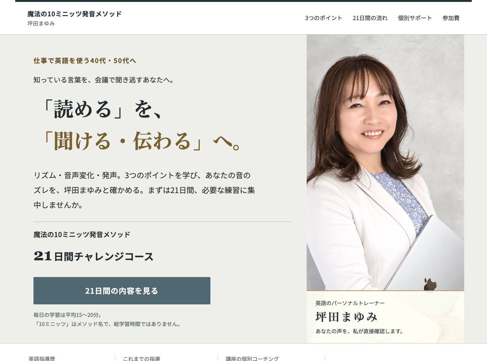

冒頭の訴求と講師の見せ方
- 現行の課題
- 対象者と悩みが続き、個別指導の価値が後ろにある。
- 今回の案
- 「読める」を「聞ける・伝わる」へ。実写真・25年以上の指導歴・のべ4,000人の実績を冒頭へ。
- 狙い
- 先生が、あなたの音を直接確認する講座だと一目で伝える。
坪田まゆみ｜販売LPのリライト・デザイン提案
Gemini APIで構成・文章を検討し、Codexで原本照合とデザイン実装を行った案です。現行の長文レターを基に、視覚の強弱と、個別指導を受ける理由を整えました。
GitHub Pagesでの提案です。UTAGE本番には反映していません。

白・温白色・チャコール・スレート・控えめな金を維持し、講師の実在感と、読みどころの大小をつけています。見出しや図の文字はHTMLで編集できます。
下記はすべて提案版に反映済みです。コピーや構成を大きく変える箇所を含むため、UTAGE反映前にご確認いただく内容です。
| 場所 | 一目で伝えること | 表現 | 原本 |
|---|---|---|---|
| ヘッダー | 対象者・問題・講師の専門性 | 実写真＋編集できるHTML見出し。PCは左右、スマホは冒頭に講師の小写真。 | スライド1–2／現行の講師実写真 |
| 音のズレ | 文字と会話の音の違い | Kenの例文・going toとgonna・強弱の表示。架空の波形は使わない。 | スライド4・56–64 |
| 発音を土台にする比較 | 単語・文法・聞き取り・会話を結びつける | 収録時の図解原本を再利用。スマホでは同じ意味の縦並び図へ。 | スライド12・88 |
| 3つのポイント | リズム・音声変化・発声の役割 | 3列から縦並びに切り替え、例文・音の変化・声のつながりを対応させる。 | スライド33・35・37・39 |
| 21日間の進行 | 4日＋7日＋10日と添削の位置 | 段階ごとの日数・学ぶ内容・5/11/17日目の提出を表示。 | スライド86–87・92–93 |
| 個別支援の全体像 | 開始前・途中・終了後に何を確かめるか | 前後60分と、途中3回のフィードバックを順に並べる。 | スライド89–91 |
| 時間の価値 | 課題が曖昧な反復と、確認して進む練習の違い | 計算例と二つの時間の使い方を対比。節約効果の実測と混同しない。 | スライド99–101 |
Geminiには現行LP、撮影用台本、完成版フォルダの書き起こし全文、収録スライド111枚、商品条件正本を渡しました。以下の方針で採否を決めています。
会議で知っている語を聞き逃す悩みと、坪田の直接確認を早い段階で結ぶ。
Geminiの構成方針とスライド8・89〜91を採用。原因は語彙力ではない／必ず解消／効果半減／何倍の時間／最短距離／波形比較／100例すべて業務用
原因の単一化・効果保証・未確認の定量や機能・例文範囲の誤り。断言を修正。発声→音声変化→リズムの積み上げピラミッド
教え方はリズムを先に置く。スライド33・35・37・39の3ポイントとして表示。現行LPに21日で習慣完成と書かれているという指摘
現行は既に否定している。未実施の修正として数えない。受講者の声・講師経歴・商品条件・価格・契約条件・参考文献
現行内容を維持し、デザインのみ調整する。書き起こしには編集前の時刻が残るため、完成動画の表示時刻とは区別し、図の対応は収録スライド番号で照合しました。
今回の公開はデザイン・原稿案です。新たなタイマーや価格切替は追加せず、現行の申込リンク・法務リンクを維持しています。決済フォームの新規作成や実購入テストは行っていません。
この案で方向性が決まったら、UTAGEのHTMLパーツと画像に展開し、購入状態別の5販売ページとウェビナー下部のレターへ反映します。既存のタイマー・フォーム・価格分岐は保持し、ページ幅と画像の表示を再確認します。
CVRの向上は現時点で未計測です。今回の狙いは、冒頭で講座の価値を伝え、途中の理解負担を減らし、価格と支援内容を選びやすくすることです。
デザインの参考：RIZAP ENGLISH公式LP。強い見出し、講師の実在感、支援の構造が伝わる見せ方を参考にし、文面・画像・成果保証は転用していません。